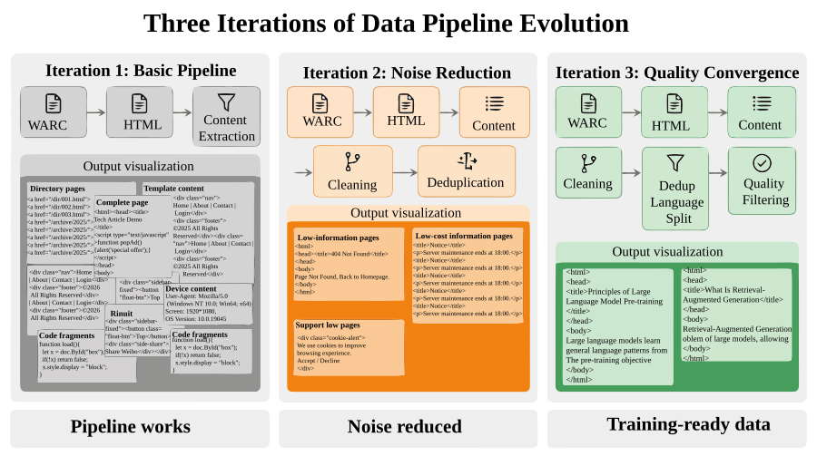
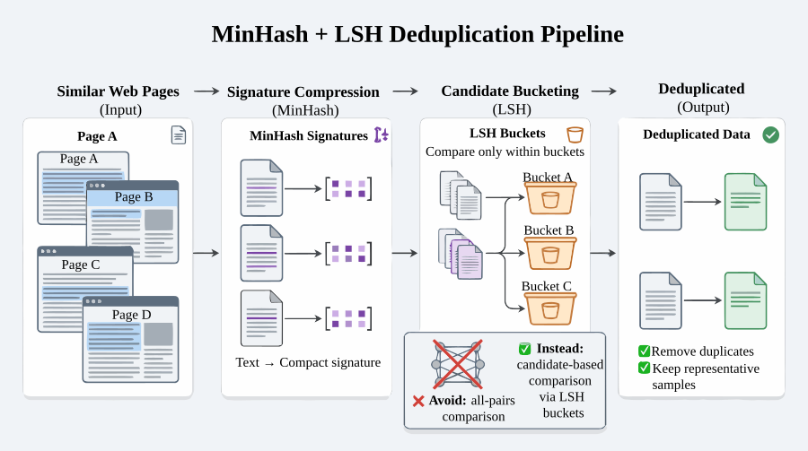
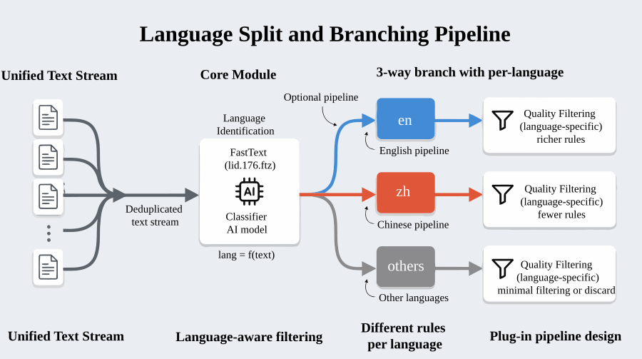
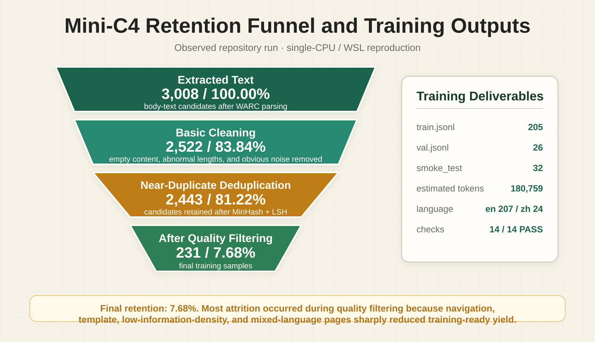
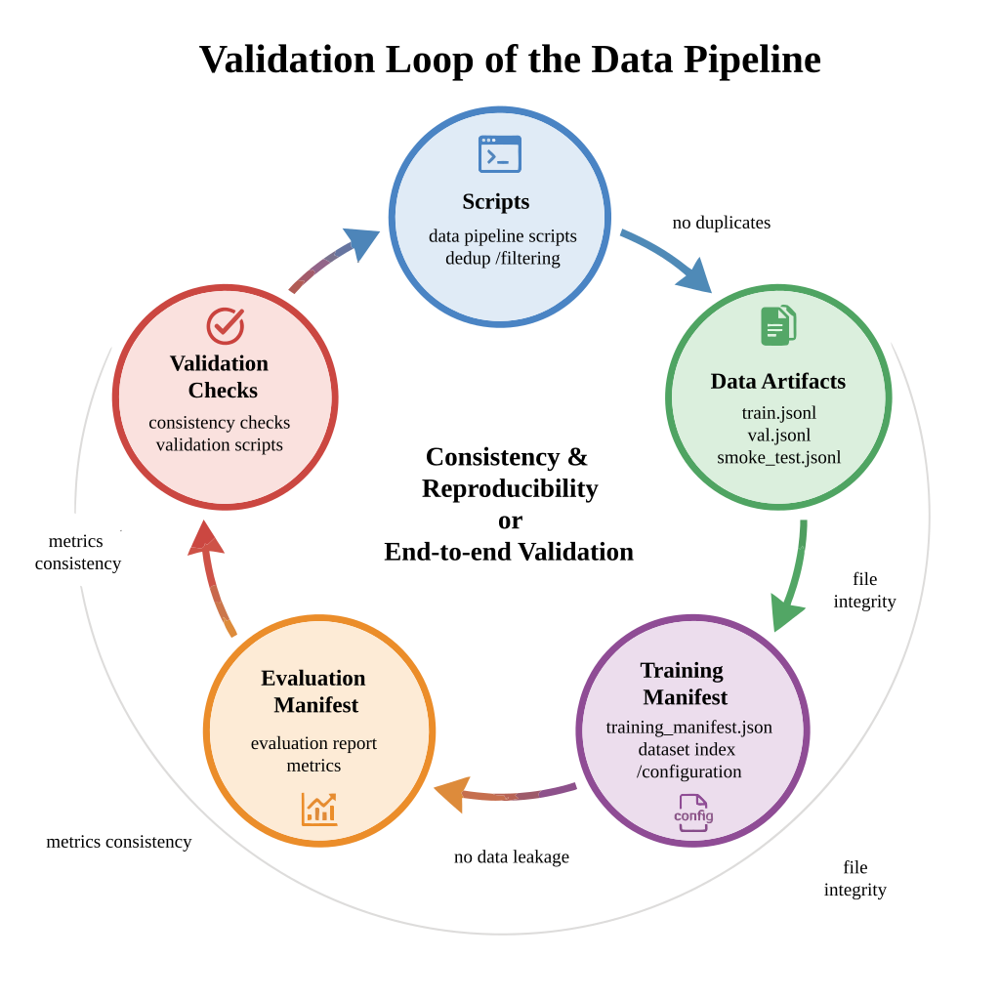

High page-level noise
Navigation, footers, ads, scripts, comments, and templates dilute the main text. The first challenge is reliably converting HTML responses in WARC archives into text candidates.
An open-source reproduction and extension of Mini-C4 that turns Common Crawl WARC files into training-ready JSONL on a single CPU / WSL machine, with stage logs, retention metrics, a manifest, and consistency checks.
The web is a major pre-training source, but raw pages contain template noise, mirrors, mixed languages, directory pages, advertising, and low-information content. This project turns those risks into a reproducible processing chain with measurable retention and filter reasons at every stage.
Navigation, footers, ads, scripts, comments, and templates dilute the main text. The first challenge is reliably converting HTML responses in WARC archives into text candidates.
Reposts, mirrors, and templated pages skew the training distribution. MinHash + LSH finds near duplicates without an all-pairs comparison.
Clean text alone is not a deliverable dataset. Training requires deterministic splits, manifests, hashes, token estimates, and consistency checks.
The pipeline follows three engineering boundaries: web archives to main text, main text to governed corpus, and governed corpus to training-ready artifacts that downstream systems can consume and validate.
Stream WARC response records with warcio, retain HTML responses, and extract main content with trafilatura.
Apply heuristic cleaning, MinHash + LSH deduplication, fastText language routing, and KenLM-based English quality filtering.
Package train / validation / smoke-test JSONL files, a training manifest, evaluation reports, and consistency results.

Each decision addresses a specific engineering constraint and makes its trade-off explicit.
warcio reads archive records incrementally instead of loading large files at once; trafilatura removes navigation, footer, and template noise.
All-pairs comparison does not scale. MinHash compresses text into signatures and LSH limits candidate comparisons to similar buckets.
fastText identifies language; English data uses KenLM quality filtering, while stronger Chinese quality modeling remains an explicit extension.
Outputs are structured JSONL records with id, URL, language, text SHA-1, estimated tokens, and split, backed by a manifest and validation report.



| Stage | Samples | Retention vs. extracted | Engineering meaning |
|---|---|---|---|
| extracted | 3008 | 100.00% | Main-text extraction proves that text exists, not that it is suitable for training. |
| clean | 2522 | 83.84% | Basic cleaning removes obvious anomalies before more expensive deduplication and quality checks. |
| deduplicated | 2443 | 81.22% | The count drops modestly, but mirrors and template duplicates are reduced to improve the training distribution. |
| final | 231 | 7.68% | Final samples pass language, length, duplication, and quality gates and are ready for training delivery. |

The validation loop keeps code, data artifacts, and reports mutually consistent, reducing the risk of silent drift or misleading metrics.
This version intentionally stays within one shard and a single CPU machine so the method, quality metrics, and validation loop can be proven first. Scaling should follow stronger controls and quality models, not precede them.
The repository contains complete environment instructions. The core path checks dependencies, runs the pipeline, and generates the observability report.
python scripts/check_env.py
python scripts/run_pipeline.py
python scripts/build_observability_report.pyI can turn an LLM web-corpus task into an executable, observable, and reviewable data-engineering pipeline while clearly separating the current single-machine prototype from future scale-out work.